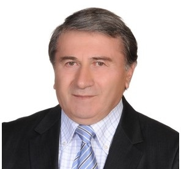

Profil
Varqa Kələntərov 2001-ci ildən İstanbuldakı Koç Universitetinin Riyaziyyat departamentində professordur. 1988-ci ildə Sankt-Peterburqdakı V. A. Steklov Riyaziyyat İnstitutunda diferensial tənliklər və riyazi fizika üzrə elmlər doktoru dərəcəsi alıb. Dissertasiya Global behavior of solutions of nonlinear equations of mathematical physics of classical and non-classical types adlanır. 1974-cü ildə Azərbaycan Elmlər Akademiyasının Riyaziyyat və Mexanika İnstitutunda eyni sahədə PhD dərəcəsi alıb. Dissertasiya On mixed problem for semi-linear parabolic-hyperbolic systems adlanır. 1966–1971-ci illərdə Azərbaycan Dövlət Universitetində oxuyub. 1989–1993-cü illərdə Bakıdakı Riyaziyyat və Mexanika İnstitutunun xüsusi törəməli diferensial tənliklər şöbəsinin müdiri, 1984–1993-cü illərdə institutun direktor müavini olub.
İş təcrübəsi
Riyaziyyat departamenti, Koç Universiteti, İstanbul, Türkiyə
2001–hazırdaProfessor
Riyaziyyat departamenti, Hacettepe Universiteti, Ankara, Türkiyə
1993–2001Professor
Tətbiqi riyaziyyat kafedrası, Bakı Dövlət Universiteti, Bakı, Azərbaycan
1991–1993Professor, əvəzçilik
Riyaziyyat kafedrası, Azərbaycan İnşaat Mühəndisləri İnstitutu, Bakı, Azərbaycan
1989–1991Professor, əvəzçilik
Riyaziyyat və Mexanika İnstitutu, Bakı, Azərbaycan
1989–1993Xüsusi törəməli diferensial tənliklər şöbəsinin müdiri
Riyaziyyat və Mexanika İnstitutu, Bakı, Azərbaycan
1984–1993Direktor müavini
Riyaziyyat və Mexanika İnstitutu, Bakı, Azərbaycan
1977–1984Böyük elmi işçi
Riyaziyyat və Mexanika İnstitutu, Bakı, Azərbaycan
1974–1977Elmi işçi
V. A. Steklov Riyaziyyat İnstitutu, Sankt-Peterburq
September 1975–May 1980Qonaq tədqiqatçı
İpək Yolu Riyaziyyat Mərkəzi, Pekin, Çin
April 2017Qonaq professor
Veytsman İnstitutu, Rehovot, İsrail
January 2017Qonaq professor
Toronto Universiteti, Kanada
July–August 2015Qonaq professor
KAUST
December 2013–February 2014Qonaq professor
Tennesi Universiteti, Amerika Birləşmiş Ştatları
July–August 2008Qonaq professor
Feza Gürsey Fundamental Elmlər İnstitutu
February–June 2001Elmi işçi
Veyerştrass Tətbiqi Analiz və Stoxastika İnstitutu, Berlin, Almaniya
November 1997Qonaq professor
Barselona Muxtar Universiteti, İspaniya
September 1994Qonaq professor
Qazi Universiteti, Ankara, Türkiyə
September–December 1992Qonaq professor
Kataloniya Politexnik Universiteti, Barselona, İspaniya
September 1991Qonaq professor
Karl Veyerştrass Riyaziyyat İnstitutu
December 1983Qonaq professor
Təhsil
DSc
1988Diferensial tənliklər və riyazi fizika. Dissertasiya: Global behavior of solutions of nonlinear equations of mathematical physics of classical and non-classical types
V. A. Steklov Riyaziyyat İnstitutu, Sankt-Peterburq, Rusiya
PhD
1974Diferensial tənliklər və riyazi fizika. Dissertasiya: On mixed problem for semi-linear parabolic-hyperbolic systems
Riyaziyyat və Mexanika İnstitutu, Azərbaycan Elmlər Akademiyası, Bakı
Universitet təhsili
1966–1971Azərbaycan Dövlət Universiteti, Bakı, Azərbaycan
Qrantlar və layihələr
- 2022–2025 — Sonsuz ölçülü dissipativ sistemlərin sonlu ölçülü sərhəd tənzimləyiciləri ilə stabilləşdirilməsi. T. Özsarı ilə. Qrant 112F084 — TÜBİTAK
- 2013–2014 — Sönümlü qeyri-xətti dalğa tənliklərinin və qeyri-xətti parabolik tənliklərin həllərinin partlayışı. Qrant 112T914 — TÜBİTAK
- 2006–2009 — Faza keçidlərində xüsusi törəməli diferensial tənliklər. H. M. Soner ilə. Qrant 106T337 — TÜBİTAK
- 1996–1997 — Qeyri-xətti Şrödinger tənliyi üçün başlanğıc-sərhəd məsələləri — TÜBİTAK
Tədris
- 2001–hazırda — Riyazi analiz, diferensial tənliklər, çoxdəyişənli analiz, xətti cəbr, tətbiqi riyaziyyat, xüsusi törəməli diferensial tənliklər, kompleks analiz və tətbiqi funksional analiz. Kurs nömrələrinə Math 106, 204, 200, 203, 303, 309, 401, 503, 552, 505, 207 və 557 daxildir — Koç Universiteti, İstanbul
- Riyazi analiz, adi və xüsusi törəməli diferensial tənliklər, funksional analiz, Sobolev fəzaları, qeyri-xətti xüsusi törəməli diferensial tənliklər, partlayış teoremləri və dissipativ dinamik sistemlər — Magistratura və bakalavr — Bakı Dövlət Universiteti, Azərbaycan Memarlıq və İnşaat Universiteti, Sankt-Peterburq Dövlət Universiteti, Ankara Universiteti və Hacettepe Universiteti
Elmi rəhbərlik
- PhD — 16 — 1985–2019-cu illərdə Koç, Hacettepe, Yaxın Şərq Texniki, Sakarya və Əl-Farabi Qazax Milli universitetlərində və Bakıdakı Riyaziyyat və Mexanika İnstitutunda adları çəkilən dissertasiyalar. Mövzular verilmir
Nəşrlər
Kitab fəsilləri
1. Kalantarov, V. K. Global solutions of coupled Kuramoto-Sivashinsky and Ginzburg-Landau equations, Nonlinear problems in mathematical physics and related topics, II, pp.213–227, Int. Math. Ser. (N. Y.), 2, Kluwer/Plenum, New York, 2002.
2. Kalantarov, V. K. Blow-up theorems for second order nonlinear evolutionary equations, in O.Boratav., A.Eden, A.Erzan.(Eds.) ”Turbulence modeling and vortex dynamics” Lecture Not. in Physics, Springer Verlag, 1997, pp.169-181
Rəylənmiş (peer-reviewed) jurnal məqalələri
1. Kalantarov, V. K. Determining functionals and finite-dimensional reduction for dissipative PDEs revisited. Journal of Differential Equations, 345 (2023), 78-103 (with A. Kostienko and S. Zelik)
2. Kalantarov, V. K. On blow up of solutions of coupled systems of parabolic and hyperbolic equations. Math. Notes, 112:3 (2022), 406–411 (with J. Kalantarova)
3. Kalantarov, V. K. Asymptotic regularity and attractors for slightly compressible Brinkman - Forchheimer equations, Applied Mathematics and Optimization, 2021 (with S. Zelik)
4. Kalantarov, V. K. Blow-up Solutions of Helmholtz Equation for a Kerr Slab with a Complex Linear and Nonlinear Permittivity, J. Math. Phys. 60, 043508 (2019) (with A. Mostafazadeh and N. Oflaz)
5. Kalantarov, V. K. Global Stabilization of the Navier-Stokes-Voight and the damped nonlinear wave equations by finite number of feedback controllers Discrete and Continuous Dynamical Systems – B, 23(3) (2018), 1325–1345. (with E.S. Titi)
6. Kalantarov, V. K. Existence of an attractor and determining modes for structurally damped nonlinear wave equations, Physica D, Nonlinear Phenomena, 376-377(2018) 15-22. (with B.A. Bilgin)
7. Kalantarov, V. K. Non-existence of Global Solutions to Nonlinear Wave Equations with Positive Initial, Communi- cations in Pure and Applied Analysis, 17(3)(2018) 987-999. (with B.A. Bilgin)
8. Kalantarov, V. K. Determining functionals for damped nonlinear wave equations, Complex Variables and Elliptic Equations, 63 (2018) 931-944, (with B.A. Bilgin)
9. Kalantarov, V. K. On Decay of Solutions of Generalised Pipe Equation Under Nonhomogeneous Dirichlet Boundary Control, Appl. Comp. Math., (2018),17(1), 48-55. (with M.Meyvaci) 4 ===== PAGE 5/8 =====
10. Kalantarov, V. K. Preventing blow up by convective terms in dissipative PDE’s. J. Math. fluid Mech. 18(2016), no. 3, 463-479.(with B. A. Bilgin and S. Zelik)
11. Kalantarov, V. K. Attractors of damped quintic wave equations in bounded domains, Annales Henri Poincaré, A Journal of Theoretical and Mathematical Physics, Ann. Henri Poincaré 17 (2016), no. 9, 2555-2584.(with A. Savostianov and S. Zelik)
12. Kalantarov, V. K. Finite-Parameters Feedback Control for nonlinear Wave Equations, Contemporary Mathematics, AMS 269 (2016)(with E. S. Titi)
13. Kalantarov, V. K. Qualitative Properties of solutions for nonlinear Schrödinger equations with nonlinear boundary conditions on the half line, J. Math. Phys. 57 021511 (2016) (with T. Özsarı)
14. Kalantarov, V. K. A note on strongly damped wave equation with fast growing nonlinearities, (with S. Zelik)Journal of magthem. Phys,56,011501 (2015)
15. Kalantarov, V. K. Blow up of solutions to the initial boundary value problem for quasilinear strongly damped wave equations (with Bilgesu A. Bilgen). J. Math. Anal. Appl. 403 (2013), no. 1, 89–94.
16. Kalantarov, V. K. Smooth attractors for the Brinkman-Forchheimer equations with fast growing nonlinearities. (with S.V. Zelik) Commun. Pure Appl. Anal. 11 (2012), no. 5, 2037–2054.
17. Kalantarov, V. K. Uniform decay rates for the energy of weakly damped defocusing semilinear Schrödinger equations with inhomogeneous Dirichlet boundary control (with I.Lasiecka and T. Özsarı), Journal of Differential Equations, Vol. 251 (2011) 1841 - 1863
18. Kalantarov, V. K. Global attractors and determining modes for the 3D Navier–Stokes–Voight equation (with E.S. Titi) Chin. Ann. Math. Ser. B 30 (2009), no. 6, 697–714.
19. Kalantarov, V. K. Finite-dimensional attractors for the quasi-linear strongly-damped wave equation (with S. Zelik) J. Differential Equations 247 (2009), no. 4, 1120–1155.
20. Kalantarov, V. K. Gevrey regularity for the attractor of the 3D Navier-Stokes-Voight equations (with B.Levant and E.S.Titi) Journal of Nonlinear Science, 19 (2009) 133 - 152
21. Kalantarov, V. K. 3D Convective Cahn - Hilliard Equation, (with A. Eden) Comm. Pure Appl. Anal. Vol.6, (2007) no.4, pp. 1075 -1086
22. Kalantarov, V. K. On continuous dependence on coefficients of the Brinkman-Forchheimer equations. (with A.O.Çelebi and D.Uğurlu) Appl. Math. Lett., 19 (2006), no. 8, 801–807.
23. Kalantarov, V. K. On global behavior of solutions to an inverse problem for nonlinear parabolic equations, (with A.Eden) J. Math.Anal.Appl. 307(2005)120-133
24. Kalantarov, V. K. The asymptotic behavior of solutions to an inverse problem for differential operator equations. Math. Comput. Modelling 37 (2003), no. 9-10, 907–914
25. Kalantarov, V. K. A remark on nonexistence of global solutions to quasi-linear hyperbolic and parabolic equations, (with Erdem D.) Appl. Math. Lett. vol. 15, no. 5, 521-653 (2002) 5 ===== PAGE 6/8 =====
26. Kalantarov, V. K. Spatial behavior estimates for the wave equation under nonlinear boundary conditions, (with A.O. Çelebi) Math. Comp. Modeling, 34,(2001),no.5-6.,527-532
27. Kalantarov, V. K. Determining functionals for nonlinear damped wave equations, (with Chueshov I.D.) Math. Phys. Anal. Geom. 8(2001), no. 215-227.
28. Kalantarov, V. K. Attractors for the Generalized Benjamin- Bona -Mahony Equation, (With O. Çelebi,M.Polat) Journal of Differential Equations, 1999,vol.157, pp. 439 - 451.
29. Kalantarov, V. K. A remark on two constructions of exponential attractors for a-contractions (with A.Eden and C.Foias) Journal of Dynamics and Diff.Eq.,1998, vol.10, no.1, pp.37-45
30. Kalantarov, V. K. Finite dimensional attractors for a class of semi-linear wave equations, (with A.Eden) Turkish Journal of Mathematics, 1996, v.20, pp. 425-450.
31. Kalantarov, V. K. On minimal global attractor for the phase -field equations, Zap. Nauchn.Sem. Leningrad Otd. Mat. Inst. Steklov, 1991, v.188, no.22, pp.70-86
32. Kalantarov, V. K. Global behavior of solutions to some fourth-order nonlinear equations Zap. Nauchn. Sem.Leningrad Otd. Mat. Inst. Steklov 1987, v.1163, no. 19, pp. 6675.
33. Kalantarov, V. K. Global behavior of solutions to the Cauchy problem for second order operator- differential equations, Izv. AN.Azerb.SSR ser.fiz.tech.mat.nauk, 1987, v.8, no.6, pp. 28-34.
34. Kalantarov, V. K. Attractors for some nonlinear problems of mathematical physics Zap. Nauchn. Sem. Leningrad Otd. Mat. Inst. Steklov 1986, v.182, pp.50-54. (English translation in J. Sov. Math., 1988, v.40., pp.619-622)
35. Kalantarov, V. K. Determination of solutions of the first boundary value problem for a system of Karman equations having an unbounded energy integral, Zap.Nauchn. Sem. Leningrad Otd.Mat.Inst.Steklov 1980, v.96, pp.97-100 (English translation in J.Sov.Math., 1983, v.21., pp.711-714)
36. Kalantarov, V. K. On stabilisation of solutions of some quasi-linear parabolic equations, (with O. A. Ladyzhenskaya) Sibirski Mat.Zhurnall, 1978, v.19, no.5, pp.1043-1052 (English transl. in Sibirian Math J., 1978)
37. Kalantarov, V. K. The occurrence of collapse for quasi-linear equations of parabolic and hyperbolic type, (with O.A.Ladyzhenskaya)Zap.Nauchn. Sem. Leningrad Otd.Mat.Inst.Steklov1977
38. Kalantarov, V. K. Investigation of generalized solutions of mixed problem for the system of two equations of parabolic and hyperbolic type, Uch. Zap. Azerb. Gos. Univ., ser.fiz.mat. nauk, 1972, no.4, pp. 50-58
Dəvətli məruzələr və konfranslarda iştirak
- International Conference ”O.A. Ladyzhenskaya centennial conference on PDE’s”, Euler Interna- tional Mathematical Institute, St. Petersburg, Julyt, 2022. — Seçilmiş məruzə — International Conference ”O.A. Ladyzhenskaya centennial conference on PDE’s”, Euler Interna- tional Mathematical Institute, St. Petersburg, Julyt, 2022.
- International Conference ”Differential Equations and Dynamical Systems”, Silkroad Mathematics Center, Shanghay, March, 2021. 2 ===== PAGE 3/8 ===== — Seçilmiş məruzə — International Conference ”Differential Equations and Dynamical Systems”, Silkroad Mathematics Center, Shanghay, March, 2021. 2 ===== PAGE 3/8 =====
- International conference ”Infinite-dimensional Dynamical Systems and Attractors” Lanzhou University, China, 1-6 July, 2019. — Seçilmiş məruzə — International conference ”Infinite-dimensional Dynamical Systems and Attractors” Lanzhou University, China, 1-6 July, 2019.
- International conference “ PDE’s and Mathematical Hydrodynamics” St.Petersburg, 30 Jukay - 3 August 2018 — Seçilmiş məruzə — International conference “ PDE’s and Mathematical Hydrodynamics” St.Petersburg, 30 Jukay - 3 August 2018
- International conference ”Operators, Functions and Systems of Mathematical Physics”, Baku, 21-24 May 2018. — Seçilmiş məruzə — International conference ”Operators, Functions and Systems of Mathematical Physics”, Baku, 21-24 May 2018.
- International workshop ”Applied and numerical analysis, with applications”, Bath, July 2016. — Seçilmiş məruzə — International workshop ”Applied and numerical analysis, with applications”, Bath, July 2016.
- International conference “Progress in Nonlinear Partial Differential Equations”, Lisbon, March, 2014, — Seçilmiş məruzə — International conference “Progress in Nonlinear Partial Differential Equations”, Lisbon, March, 2014,
- International workshop “Advances in Analysis of PDEs”, Stockholm, July, 2012, — Seçilmiş məruzə — International workshop “Advances in Analysis of PDEs”, Stockholm, July, 2012,
- Dissipative PDEs in Bounded and Unbounded Domains and Related Attractors, Edinburgh, UK, September, 2010 — Seçilmiş məruzə — Dissipative PDEs in Bounded and Unbounded Domains and Related Attractors, Edinburgh, UK, September, 2010
- Third Conference of the World Mathematical Society of Turcic Countries, Almaty, Kazakhstan, July 2009, — Seçilmiş məruzə — Third Conference of the World Mathematical Society of Turcic Countries, Almaty, Kazakhstan, July 2009,
- Conference on parabolic and Navier – Stokes equations, The Banach Center, Bedlewo, Poland, September, 2008, — Seçilmiş məruzə — Conference on parabolic and Navier – Stokes equations, The Banach Center, Bedlewo, Poland, September, 2008,
- Annual conference of Turkish mathematical Society, Istanbul, September, 2008, — Seçilmiş məruzə — Annual conference of Turkish mathematical Society, Istanbul, September, 2008,
- 6th International ISAAC Congress, 14-18 August, 2007, — Seçilmiş məruzə — 6th International ISAAC Congress, 14-18 August, 2007,
- AIMS International Conference on Dynamical Systems and Differential equations, Poitiers, France, Jun 25-28, 2006, — Seçilmiş məruzə — AIMS International Conference on Dynamical Systems and Differential equations, Poitiers, France, Jun 25-28, 2006,
- International Conference “ Differential and Difference Equations and Applications”, Melbourne, Florida, USA, August 1-5,2005, — Seçilmiş məruzə — International Conference “ Differential and Difference Equations and Applications”, Melbourne, Florida, USA, August 1-5,2005,
- International Conference “Navier – Stokes Equations and Applications”, St.Petersburg, Russia, September 11-18,2002, — Seçilmiş məruzə — International Conference “Navier – Stokes Equations and Applications”, St.Petersburg, Russia, September 11-18,2002,
- International Conference ”Nonlinear Partial Differential Equations”, Alushta, the Crimea, Ukraine, September 15-21,2003, — Seçilmiş məruzə — International Conference ”Nonlinear Partial Differential Equations”, Alushta, the Crimea, Ukraine, September 15-21,2003,
- Ninth International Symposium on continuum models and discrete systems, Istanbul, 29 June - 3 July 1998, — Seçilmiş məruzə — Ninth International Symposium on continuum models and discrete systems, Istanbul, 29 June - 3 July 1998,
- International workshop on turbulence modelling and vortex dynamics, Istanbul, 2-6 September 1996, — Seçilmiş məruzə — International workshop on turbulence modelling and vortex dynamics, Istanbul, 2-6 September 1996,
- International workshop on non-linear problems in mathematical physics II, Ankara, September 14-18, 1995, — Seçilmiş məruzə — International workshop on non-linear problems in mathematical physics II, Ankara, September 14-18, 1995,
- International workshop on dynamical systems, Barcelona, Spain, September, 1994, — Seçilmiş məruzə — International workshop on dynamical systems, Barcelona, Spain, September, 1994,
- International conference on partial differential equations ”Equdiff 91” Barcelona, Spain, August 1991, 3 ===== PAGE 4/8 ===== — Seçilmiş məruzə — International conference on partial differential equations ”Equdiff 91” Barcelona, Spain, August 1991, 3 ===== PAGE 4/8 =====
- International conference on continuum mechanics and related problems of analysis dedicated to 100th anniversary of academician N.I.Muskhelishvili, Tbilisi,Georgia,June 1991, — Seçilmiş məruzə — International conference on continuum mechanics and related problems of analysis dedicated to 100th anniversary of academician N.I.Muskhelishvili, Tbilisi,Georgia,June 1991,
- Annual Iranian mathematical conference, Mashhad, Iran, 1991, — Seçilmiş məruzə — Annual Iranian mathematical conference, Mashhad, Iran, 1991,
- All-union conference on differential equations and mathematical physics dedicated to 80-th anniversary of academician N.N.Bogolyubov, Ternopol, Ukraine, 1990, — Seçilmiş məruzə — All-union conference on differential equations and mathematical physics dedicated to 80-th anniversary of academician N.N.Bogolyubov, Ternopol, Ukraine, 1990,
- International conference on partial differential equations,Holzhau, Germany,1988, — Seçilmiş məruzə — International conference on partial differential equations,Holzhau, Germany,1988,
- International topological conference, Baku, 1987, — Seçilmiş məruzə — International topological conference, Baku, 1987,
- All-union conference on the theory of functions and differential equations dedicated to 100th anniversary of academician V.I. Smirnov, Leningrad, 1987, — Seçilmiş məruzə — All-union conference on the theory of functions and differential equations dedicated to 100th anniversary of academician V.I. Smirnov, Leningrad, 1987,
- All-union seminar on nonlinear problems of mathematical physics, Leningrad, 1984, — Seçilmiş məruzə — All-union seminar on nonlinear problems of mathematical physics, Leningrad, 1984,
- All-union conference on mathematical problems of physics, Moscow, 1984, — Seçilmiş məruzə — All-union conference on mathematical problems of physics, Moscow, 1984,
- All-union conference on nonlinear problems of mathematical physics, Leningrad, 1982, — Seçilmiş məruzə — All-union conference on nonlinear problems of mathematical physics, Leningrad, 1982,
- All-union conference on mathematical problems of physics,Moscow,1978, — Seçilmiş məruzə — All-union conference on mathematical problems of physics,Moscow,1978,
- International conference on partial differential equations dedicated to 75th anniversary of aca- demician I.G. Petrovski, Moscow, 1975. — Seçilmiş məruzə — International conference on partial differential equations dedicated to 75th anniversary of aca- demician I.G. Petrovski, Moscow, 1975.